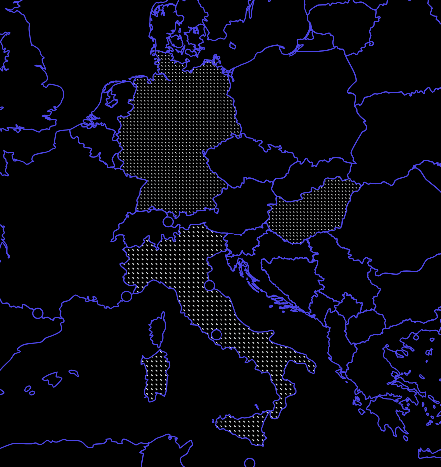

Milan Rosko
Logician & Designer
Constructive Logic, Proof Theory,
Realizability Interpretation,
Type Theory, Linear Algebra.
Information Design, Motion Design, Signage
Main formal logic projects
- “Carryless Pairing” .html
- “Typed Repair” vs. Gradient Descent .html
- The consolidated PROOFCASE repository GitHub
- The experimental REFLEXICA repository GitHub
- Universal Cubic Diophantines as bounded theorem-check artifacts .html
Design & logic
- Variations on Cistercian numerals (and Clocks) .html
Posed solutions to open problems
- Cubic Diophantine Equations are recursively enumerable: arXiv
“Ongoing” manuscripts
Currently enrolled in the University of Hagen (Computer Science BA). My earlier work in design cultivated a lasting interest in structural clarity and disciplined abstraction. That path eventually led to formal logic, with a particular emphasis on first-order systems and constructive semantics.
My current research examines how impredicativity behaves when separated from the full classical apparatus. The goal is to restrict unnecessary ontological commitments while retaining constructive control over expressive resources under the Brouwer–Heyting–Kolmogorov Interpretation.
In the mid-20th century, the cybernetic vision was ahead of its institutional time. Today, software mediates most coordination, security is adversarial, and “proof” increasingly means verifiable procedure. Hence the constructive viewpoint is no longer only philosophical; it is a practical epistemology for computational civilization.

